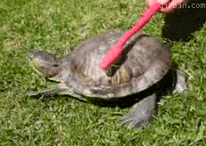

Põhjus, miks kilpkonnad on paremad kui konnad
Kilpkonnad ja konnad on mõlemad huvitavad loomad, kuid kui peaks valima, kumb on parem, siis võidab kilpkonn
VAIELDAMATULT!
Esiteks on kilpkonnad pikaealised – mõned neist võivad elada üle saja aasta, samal ajal kui konnad peavad
leppima palju lühema elueaga.
Kui soovid pikaajalist sõpra, on kilpkonn parim valik.
Teiseks, on kilpkonnadel tugev soomus, mis kaitseb neid kiskjate eest.
Konnad seevastu on pehmed ja haavatavad, mistõttu nad peavad pidevalt põgenema.
Kilpkonn ei kiirusta kuhugi, sest ta teab, et tema kest on nagu looduslik turvis.
Samuti ei tee kilpkonnad vastikult lärmakat krooksumist, mis võib öösiti und segada.
Nad on rahulikud ja väärikad loomad, kes ei tekita kaost ega lärmi.
Lisaks on kilpkonnad väga iseseisvad ja neid on lihtsam pidada lemmikloomana.
Konnad vajavad niisket keskkonda ja toitu, mis võib olla tülikas.
KOKKUVÕTTES on kilpkonn kannatlik, rahulik ja tark - väärtused, mida võiksime kõik endas
arendada.
Seega, kui keegi küsib, kumb on parem, on vastus lihtne: kilpkonn võidab iga kord!
